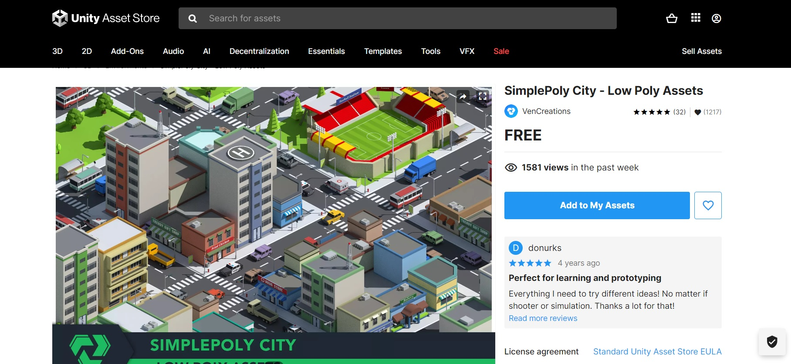

Analisar a integração de elementos multimídia em jogos digitais.
Vamos iniciar os estudos?
PlayAssista ao vídeo abaixo para uma introdução aos seus estudos
Como garantir o equilíbrio nos combates do jogo multiplayer online de tiro em primeira pessoa? Quais são os erros mais comuns que podem prejudicar a experiência do jogador?
A indústria de jogos digitais vive uma era fascinante de inovação e criatividade, impulsionada pela constante evolução tecnológica. E o desenvolvimento de jogos digitais é um processo intrincado que abrange diversas fases, cada uma desempenhando um papel crucial na criação de experiências envolventes para os jogadores.
Nesse contexto, a integração de elementos multimídia desempenha um papel crucial na criação de experiências imersivas e envolventes.
Por isso, é essencial estar atento às práticas e técnicas utilizadas na indústria para otimizar o seu projeto. Vamos conhecer algumas delas?
Os testes de jogos digitais na etapa final de desenvolvimento são uma parte crítica do processo para garantir que o jogo esteja pronto para ser lançado.
Essa fase de testes é conhecida como teste Beta, em que o jogo é disponibilizado para um grupo seleto de jogadores para jogarem e fornecerem feedback valioso antes do lançamento oficial.
Aqui estão alguns aspectos importantes dos testes de jogos digitais na etapa final de desenvolvimento:
Identificação de problemas: Os testes beta são projetados para identificar problemas, como bugs, erros de programação, falhas de desempenho, problemas de equilíbrio de jogo ou qualquer outro aspecto que possa afetar a qualidade ou a experiência do jogador. Os testadores são incentivados a relatar todos os problemas encontrados para que a equipe de desenvolvimento possa corrigi-los antes do lançamento.
Teste de jogabilidade: Os testes beta permitem que os jogadores experimentem o jogo em um ambiente real e forneçam feedback sobre a jogabilidade. Isso inclui a avaliação de mecânicas de jogo, controles, resposta do jogador, ritmo, dificuldade e qualquer outro aspecto relacionado à experiência do jogador. Esse feedback é valioso para fazer ajustes finais e melhorias antes do lançamento.
Avaliação de desempenho: Os testes beta também são úteis para avaliar o desempenho do jogo em diferentes sistemas e configurações.
Os testadores podem identificar problemas de desempenho, como lentidão, travamentos ou problemas de carregamento, em diferentes dispositivos ou configurações de hardware. Isso permite que a equipe de desenvolvimento otimize o jogo para garantir uma experiência fluida e satisfatória para a maioria dos jogadores.
Testes de rede e multiplayer: Se o jogo possuir recursos de jogabilidade online ou multiplayer, os testes beta são uma oportunidade de verificar a estabilidade da rede, identificar possíveis problemas de latência, avaliar a escalabilidade do servidor e testar a funcionalidade do modo multiplayer.
Estes testes ajudam a garantir uma experiência de jogo online suave e sem interrupções.
Feedback dos jogadores: Uma das partes mais valiosas dos testes beta é o feedback dos jogadores. Os testadores têm a oportunidade de fornecer opiniões sobre diferentes aspectos do jogo, como narrativa, personagens, gráficos, áudio, interfaces e qualquer outro elemento do jogo.
Esse feedback ajuda a equipe de desenvolvimento a entender o que está funcionando bem e o que pode ser aprimorado.
Ajustes e melhorias: Com base no feedback recebido durante os testes beta, a equipe de desenvolvimento pode realizar ajustes e melhorias no jogo. Isso pode envolver correção de bugs, aprimoramento de desempenho, ajustes de equilíbrio de jogo, refinamento de mecânicas ou implementação de recursos adicionais.
A ideia é aperfeiçoar o jogo com base nas opiniões e sugestões dos testadores antes do lançamento oficial.
A execução de testes de jogos digitais é uma etapa crucial no desenvolvimento de um jogo. Esses testes são realizados para identificar e corrigir problemas, melhorar a jogabilidade e garantir a qualidade geral do jogo antes de seu lançamento.
Segue abaixo os principais aspectos relacionados à execução de testes de jogos digitais:
Planejamento de testes: Antes de iniciar os testes, é importante criar um plano de testes detalhado. Isso envolve identificar os objetivos dos testes, definir as áreas-chave a serem testadas, estabelecer critérios de aceitação e determinar os recursos necessários para realizar os testes.

Testes de funcionalidade: Os testes de funcionalidade são realizados para garantir que todas as funções do jogo estejam operando corretamente. Isso inclui testar a mecânica de jogo, os controles, as interfaces de usuário, a lógica do jogo e os recursos específicos, como habilidades dos personagens ou elementos interativos.
Testes de desempenho: Os testes de desempenho são realizados para avaliar o desempenho do jogo em diferentes aspectos. Isso pode incluir testes de carregamento de níveis, testes de taxa de quadros, testes de estabilidade, testes de uso de memória e testes de tempo de resposta. O objetivo é garantir que o jogo seja executado de maneira suave e sem problemas técnicos significativos.
Testes de compatibilidade: É importante testar o jogo em diferentes plataformas, dispositivos e configurações para garantir sua compatibilidade e funcionamento adequado. Isso inclui testes em diferentes sistemas operacionais, consoles de videogame, computadores e dispositivos móveis, bem como testes em resoluções de tela variadas e configurações de hardware diferentes.

Testes de localização: Se o jogo for lançado em diferentes regiões ou idiomas, é necessário realizar testes de localização. Isso envolve verificar a tradução, os caracteres especiais, os formatos de data e hora, as convenções culturais e qualquer outra consideração específica para garantir que o jogo seja adaptado corretamente para cada região.
Testes de usabilidade: Os testes de usabilidade são realizados para avaliar a experiência do usuário e a facilidade de uso do jogo. Isso pode incluir a realização de testes com jogadores de diferentes níveis de habilidade e experiência para identificar áreas que possam ser confusas, frustrantes ou que possam ser melhoradas para melhorar a jogabilidade e a satisfação do jogador.
Relatórios e correção de bugs: Durante os testes, é importante relatar todos os bugs, problemas e questões encontrados em um sistema de rastreamento de bugs. Isso permite que a equipe de desenvolvimento acompanhe e priorize as correções necessárias.
Os bugs são identificados, documentados, classificados por gravidade e resolvidos pela equipe de desenvolvimento.
Ciclo de iteração: Os testes de jogos digitais são um processo iterativo, em que os testes são realizados repetidamente à medida que os problemas são corrigidos e as melhorias são implementadas.
A iteração é o processo de testar e refinar um projeto repetidamente, com base no feedback dos usuários. É um processo fundamental para criar um design que seja eficaz e atenda às necessidades dos usuários.
O ciclo de iteração permite que a equipe de desenvolvimento teste novamente as áreas afetadas pelas correções e melhorias, garantindo que essas mudanças não tenham introduzido novos problemas.
VOCÊ SABIA?
Também conhecido como Game Tester, a profissão de QA também pode envolver pressão e prazos apertados, especialmente em retas finais do desenvolvimento do jogo, onde cada detalhe precisa ser verificado e corrigido. Mesmo assim, o trabalho de QA é fundamental para garantir que os jogos sejam entregues com a menor quantidade possível de problemas, proporcionando uma experiência positiva e envolvente para os jogadores.
O profissional de teste de jogos é multidisciplinar, requerendo compreensão em várias etapas do processo de produção para comunicar os erros efetivamente a todas as equipes envolvidas. Embora não haja uma graduação específica para a função, é essencial ter conhecimentos em programação, animação, roteiro e tecnologia. Por esse motivo, formações em Jogos Digitais, TI ou Engenharia são as mais úteis para esse profissional. Embora algumas empresas contratem estagiários para a área de testes, é importante ressaltar que a maioria das vagas para QA busca por profissionais de nível sênior.
VC S/A. Jogador nº 1: saiba como é trabalhar com teste de games. 2021. Disponível em: https://shorturl.at/enyzC
VOCÊ SABIA?
A Tec Toy, uma empresa brasileira de eletrônicos, ficou conhecida nos anos 80 e 90 por sua estratégia inovadora de localização de jogos. A localização envolve adaptar jogos e consoles para mercados específicos, considerando as preferências culturais e as características do público-alvo. A Tec Toy se destacou nesse campo ao trazer para o Brasil consoles e jogos populares da Sega, tornando-os acessíveis e culturalmente relevantes para o público brasileiro.
Nos anos 80, a Tec Toy estabeleceu uma parceria com a Sega, uma empresa japonesa renomada no setor de videogames. Essa colaboração permitiu à Tec Toy licenciar e produzir consoles como o Master System e o Mega Drive, além de adaptar jogos populares para o mercado brasileiro.
A Tec Toy não apenas trouxe os consoles para o Brasil, mas também investiu na localização dos jogos. Traduzindo os textos, ajustando elementos culturais e até mesmo modificando alguns jogos para se adequarem ao gosto do público brasileiro, a empresa conseguiu criar uma experiência mais envolvente e acessível para os jogadores locais. A empresa traduziu para o português o jogo Phantasy Star do Master System, assim como também lançou versões adaptadas da série Wonder Boy no Brasil como jogos da Turma da Mônica, como Mônica no Castelo do Dragão (1991), Turma da Mônica em: O Resgate (1993), e Turma da Mônica na Terra dos Monstros (1994).
Além da adaptação dos produtos, a Tec Toy investiu em estratégias de marketing que ressoavam com a cultura brasileira. Isso incluiu campanhas publicitárias direcionadas e a promoção de eventos de jogos, contribuindo para a construção de uma comunidade de jogadores no Brasil.
Por fim, a Tec Toy produziu seus próprios títulos e adaptações de jogos famosos para os consoles da Sega, como Férias Frustradas do Pica-Pau (1996), Street Fighter II (1997), e Duke Nukem 3D (1996).
O plano de testes de jogos digitais é um documento detalhado que descreve a estratégia e os objetivos dos testes a serem realizados durante o processo de desenvolvimento do jogo.
Ele fornece uma estrutura para organizar e executar os testes de forma eficaz. Aqui estão alguns elementos chave a serem considerados ao criar um plano de testes de jogos digitais:
Objetivos dos testes: Defina claramente os objetivos dos testes. Isso pode incluir verificar a funcionalidade, identificar e corrigir bugs, avaliar o desempenho, testar a usabilidade e a experiência do usuário, garantir a compatibilidade em diferentes plataformas, entre outros.
Escopo dos testes: Estabeleça os limites dos testes, especificando quais áreas do jogo serão testadas e quais serão excluídas. Isso pode incluir níveis específicos, personagens, modos de jogo ou recursos. Definir o escopo dos testes ajuda a garantir que todas as partes relevantes do jogo sejam abordadas durante os testes.
Estratégia de testes: Determine a estratégia geral de testes, incluindo a sequência dos testes e a alocação de recursos.
Decida se os testes serão executados em fases específicas do desenvolvimento ou se serão executados de forma contínua durante todo o processo. Considere o número de testadores necessários, os dispositivos e plataformas a serem utilizados e quaisquer requisitos específicos de hardware ou software.

Casos de teste: Crie casos de teste detalhados que descrevem os cenários de teste, as etapas a serem executadas e os resultados esperados. Esses casos de teste ajudam a garantir que todos os aspectos relevantes do jogo sejam testados de forma sistemática. Inclua casos de teste para funcionalidades específicas, recursos-chave, interações do jogador e quaisquer outros elementos críticos do jogo.
Critérios de aceitação: Estabeleça critérios claros de aceitação que definem quando um teste é considerado bem-sucedido. Por exemplo, especifique níveis aceitáveis de desempenho, critérios de usabilidade ou requisitos de compatibilidade. Isso ajuda a determinar quando um aspecto do jogo está pronto para ser lançado ou quando precisa de ajustes adicionais.
Calendário de testes: Defina um cronograma para os testes, incluindo as datas de início e término, bem como as datas de revisão e correção de problemas. Isso ajuda a gerenciar o tempo disponível para os testes e garante que eles sejam executados de maneira oportuna.
Registro e acompanhamento de bugs: Determine o sistema e o processo para registrar e rastrear bugs encontrados durante os testes. Use um sistema de rastreamento de bugs para documentar os problemas, atribuí-los à equipe de desenvolvimento e acompanhar seu status até a resolução.

Comunicação e relatórios: Estabeleça canais de comunicação claros para relatar problemas e fornecer feedback aos membros da equipe de desenvolvimento. Determine a frequência e o formato dos relatórios de testes para manter todos atualizados sobre o progresso, resultados e questões encontradas durante os testes.
Lembre-se de que o plano de testes deve ser flexível e adaptável, permitindo ajustes à medida que o desenvolvimento do jogo progride e novos requisitos ou desafios surgem.
O objetivo é garantir uma abordagem sistemática e abrangente para testar o jogo e identificar quaisquer problemas ou melhorias necessárias antes do lançamento. Vamos testar seus conhecimentos?
QUESTÃO 1
Qual é a melhor forma de garantir que todas as partes relevantes de um jogo sejam testadas de forma sistemática?
A produção de jogos digitais é um processo complexo e longo que envolve diversas etapas, desde a concepção da ideia original até o lançamento do jogo. O processo de produção de jogos digitais pode ser dividido em quatro fases principais:
A produção de jogos digitais é um processo extenso e repleto de desafios, porém bastante gratificante. É um processo que exige criatividade, inovação e trabalho duro de uma equipe multidisciplinar.

O processo de desenvolvimento de um jogo digital é dividido em quatro estágios distintos: Alpha, Beta, Demo e Gold. Cada uma tem uma proposta de desenvolvimento diferente para atender às necessidades específicas do projeto.
A fase Alpha é uma etapa inicial do desenvolvimento de um jogo. Nessa fase, o jogo ainda está em um estado rudimentar, com muitos recursos e funcionalidades ainda não implementados.
Geralmente, a fase Alpha é realizada internamente pela equipe de desenvolvimento e é focada em testar os principais elementos do jogo, identificar problemas e receber feedback inicial para orientar o desenvolvimento futuro.
A fase Beta ocorre após a fase Alpha e envolve o lançamento do jogo para um grupo seleto de jogadores, conhecidos como Beta Testers.
Esses testadores têm a oportunidade de jogar o jogo em um ambiente real e fornecer feedback detalhado sobre a jogabilidade, desempenho, bugs e outros aspectos relevantes. A fase Beta permite que a equipe de desenvolvimento identifique e corrija problemas antes do lançamento oficial do jogo.
Uma demo (abreviação de demonstração) é uma versão reduzida de um jogo que é disponibilizada para os jogadores experimentarem antes do lançamento completo.
A demo normalmente contém uma porção limitada do jogo final, permitindo que os jogadores tenham uma ideia do que esperar em termos de jogabilidade, gráficos e mecânicas. As demos podem ser disponibilizadas gratuitamente ou como parte de eventos, como feiras de jogos.
O termo "Gold" refere-se à versão finalizada e pronta para a duplicação do jogo. Quando um jogo atinge o estágio Gold, significa que o desenvolvimento do jogo foi concluído, todas as funcionalidades foram implementadas, os bugs significativos foram corrigidos e o jogo está pronto para ser distribuído e fabricado em cópias físicas (no caso de jogos em mídia física).
O estágio Gold marca o fim do processo de desenvolvimento e o início da produção e distribuição do jogo.
É importante observar que esses termos podem variar em seus significados e aplicações dependendo do contexto e das práticas da indústria de jogos.
Além disso, nem todos os jogos passam por todas as fases ou têm uma versão demo disponível. Cada jogo pode ter seu próprio cronograma e processo específico de desenvolvimento e lançamento.
QUESTÃO 2
Qual é o objetivo da fase Beta do desenvolvimento de um jogo digital?
A integração de jogos digitais refere-se ao processo de conectar diferentes sistemas, plataformas ou componentes em um ecossistema de jogos para permitir a interação entre eles.
Essa integração pode ocorrer de várias maneiras, dependendo dos objetivos e requisitos do jogo. Vamos explorar alguns aspectos da integração de jogos digitais:

Integração de plataformas: Uma forma comum de integração de jogos digitais é a integração entre diferentes plataformas, como consoles de videogame, computadores e dispositivos móveis. Isso envolve a criação de versões do jogo para cada plataforma específica, levando em consideração as características e limitações técnicas de cada uma. A integração de plataformas permite que os jogadores interajam e joguem o mesmo jogo independentemente do dispositivo que estejam usando.
Integração de serviços online: Muitos jogos digitais têm recursos online, como partidas multiplayer, ranking de líderes, sistemas de conquistas ou armazenamento em nuvem.
A integração de serviços online requer a conexão com servidores e a implementação de APIs (interfaces de programação de aplicativos) para permitir a comunicação entre o jogo e os serviços online. Isso permite que os jogadores interajam com outros jogadores, compartilhem seu progresso e acessem recursos adicionais.
Integração de redes sociais: Muitos jogos digitais permitem que os jogadores se conectem e compartilhem sua experiência de jogo por meio de redes sociais, como Facebook, Twitter ou Instagram.
A integração de redes sociais permite que os jogadores compartilhem capturas de tela, conquistas e outros momentos do jogo em suas contas de mídia social, promovendo o jogo e incentivando a interação social entre os jogadores.
Integração de APIs de terceiros: Em alguns casos, os desenvolvedores de jogos podem optar por integrar APIs de terceiros para adicionar recursos adicionais ao jogo. Isso pode incluir integração com serviços de publicidade, serviços de análise de dados, sistemas de pagamento ou ferramentas de suporte ao jogador.
A integração de APIs de terceiros permite que os jogos acessem funcionalidades adicionais e melhorem a experiência do jogador.
Integração de mods e conteúdo gerado pelo usuário: Alguns jogos digitais permitem que os jogadores criem e compartilhem mods (modificações) ou conteúdo gerado pelo usuário, como skins, níveis personalizados ou mods de jogabilidade.
A integração desses mods no jogo requer sistemas e ferramentas que permitam o carregamento, o download e a instalação desse conteúdo adicional. Isso promove a criatividade e a personalização do jogo por parte dos jogadores.
A integração de jogos digitais é uma parte importante do desenvolvimento de jogos modernos, permitindo a conectividade entre diferentes plataformas, serviços e comunidades de jogadores.
Isso enriquece a experiência do jogador, promove a interação social e a personalização do jogo, além de fornecer recursos adicionais e oportunidades de monetização para os desenvolvedores.
Em jogos digitais, o termo assets refere-se a todos os recursos utilizados no desenvolvimento do jogo, como gráficos, modelos 3D, animações, efeitos sonoros, trilhas sonoras, texturas, scripts, interfaces de usuário e muito mais.
Os assets são os componentes que compõem o visual, a jogabilidade e a experiência geral do jogo.
Vamos explorar mais detalhadamente o papel dos assets nos jogos digitais:
Gráficos e modelos 3D: Os assets gráficos são elementos visuais, como cenários, personagens, objetos, efeitos visuais e interfaces de usuário.
Esses assets podem ser criados por artistas digitais e designers gráficos e podem ser em 2D ou em 3D, dependendo do estilo do jogo. Eles contribuem para a estética do jogo, a imersão do jogador e a criação de um mundo virtual consistente.
Efeitos sonoros e trilhas sonoras: Os assets sonoros são responsáveis pelos efeitos sonoros e pela trilha sonora do jogo. Os efeitos sonoros incluem sons ambientais, sons de ações do jogador, vozes dos personagens e muito mais.
A trilha sonora é a música que acompanha o jogo, ajudando a definir o clima, a intensidade e as emoções em diferentes momentos do jogo. Os assets sonoros são criados por compositores, designers de som e artistas de áudio.
Texturas e materiais: As texturas são utilizadas para dar vida aos objetos e personagens do jogo. Elas são aplicadas nos modelos 3D para adicionar detalhes, como pele, roupas, superfícies metálicas, madeira, entre outros.
Além disso, os materiais definem as propriedades visuais dos objetos, como reflexos, brilho, opacidade e transparência. As texturas e materiais são criados por artistas gráficos e podem contribuir significativamente para a qualidade visual do jogo.
Scripts e programação: Além dos aspectos visuais e sonoros, os assets também incluem componentes relacionados à programação e aos scripts.
Isso envolve códigos e scripts que controlam a lógica do jogo, a inteligência artificial dos personagens, a física do jogo, a interação do jogador e muito mais. Esses assets são criados por programadores e desenvolvedores e são essenciais para o funcionamento correto do jogo.
Interfaces de usuário: As interfaces de usuário (UI) são os elementos visuais e interativos que permitem que os jogadores interajam com o jogo, como menus, botões, indicadores de status, mapas e inventários.
As interfaces de usuário bem projetadas facilitam a navegação e a compreensão do jogo, tornando a experiência do jogador mais intuitiva. Os assets de UI são projetados por artistas gráficos e designers de interface.
Os assets são recursos essenciais para a criação de jogos digitais, pois eles contribuem para a estética visual, a atmosfera sonora e a interatividade do jogo.
Eles são criados por uma equipe multidisciplinar de artistas, designers, compositores e programadores, e desempenham um papel fundamental na criação de uma experiência de jogo imersiva e envolvente.
A seleção e o desenvolvimento cuidadosos dos assets são importantes para garantir a qualidade visual, a jogabilidade e o apelo estético do jogo.
QUESTÃO 3
Qual é uma das principais considerações da publicação de jogos digitais?
A codificação é um elemento essencial no desenvolvimento de jogos digitais. Ela envolve a escrita de código de programação para criar a lógica, a interação e o funcionamento do jogo. Vamos discutir alguns aspectos importantes da codificação nos jogos digitais:
Linguagens de programação: Os jogos digitais podem ser programados usando uma variedade de linguagens de programação, como C++, C#, Java, Python, JavaScript e muitas outras.
Engines de jogo: Muitos desenvolvedores de jogos utilizam engines de jogo, que são frameworks ou ambientes de desenvolvimento que oferecem ferramentas e bibliotecas para facilitar a criação de jogos. Exemplos populares de engines de jogo incluem a Unity, Unreal Engine, Godot e Phaser. Essas engines fornecem recursos poderosos para a codificação, bem como editores visuais, recursos de renderização, gerenciamento de ativos e muito mais.
Lógica do jogo: A codificação é usada para implementar a lógica do jogo, que abrange desde o controle dos personagens, a física do jogo, a IA (Inteligência Artificial), os sistemas de colisão, os sistemas de pontuação, até a progressão e os desafios do jogo. É a codificação que define as regras e o comportamento do jogo, permitindo que os jogadores interajam com o ambiente virtual.
Gráficos e animações: A codificação também é necessária para lidar com os aspectos visuais do jogo. Isso inclui renderização de gráficos em 2D ou 3D, aplicação de texturas, animações de personagens e objetos, efeitos visuais e muito mais. Os algoritmos e as técnicas de codificação são utilizados para otimizar o desempenho gráfico e criar uma experiência visual atraente e fluida.

Interação com o jogador: Através da codificação, é possível capturar e processar as entradas do jogador, como movimento do teclado, cliques do mouse, toques em dispositivos móveis, entre outros.
A codificação também permite a implementação de interfaces de usuário interativas, como menus, botões e telas de jogo, garantindo uma experiência de jogo intuitiva e envolvente.
Depuração e otimização: Durante o processo de codificação, é comum encontrar bugs e problemas de desempenho. A depuração é o processo de identificar e corrigir erros no código, garantindo que o jogo funcione corretamente. Além disso, a otimização é necessária para melhorar o desempenho do jogo, tornando-o mais rápido e eficiente, por exemplo, otimizando loops, melhorando o uso da memória e reduzindo gargalos de processamento.
Manutenção e atualizações: Após o lançamento do jogo, a codificação continua sendo importante para a manutenção e atualizações futuras. Correção de bugs, implementação de patches, lançamento de conteúdo adicional e melhorias contínuas são realizadas por meio da codificação.
A codificação nos jogos digitais é uma disciplina complexa e criativa que requer habilidades de programação, resolução de problemas e compreensão dos objetivos e requisitos do jogo. Os programadores trabalham em estreita colaboração com artistas, designers e outros membros da equipe de desenvolvimento para criar uma experiência de jogo coesa e envolvente.
QUESTÃO 4
Qual das seguintes afirmações é verdadeira sobre a codificação em jogos digitais?
Segue abaixo um exemplo simplificado de um documento de plano de testes para um jogo fictício chamado Space Explorer.
Este documento abrange alguns dos aspectos essenciais, mas é importante personalizá-lo de acordo com as necessidades específicas do seu jogo e do processo de desenvolvimento.
Lembre-se de que a complexidade do plano de testes pode variar com base na escala do projeto.
Plano de Testes:
Space Explorer
Este é um exemplo básico e genérico. É recomendável ajustar os detalhes para atender às necessidades específicas do seu jogo e da sua equipe de desenvolvimento.